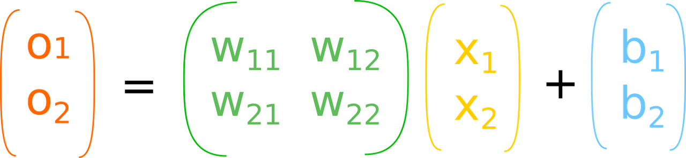

Neural Networks Basics
WORK IN PROGRESS
What is neural network?
Neural network was designed long long ago as a tool to explain how brain works in terms of computation. The infamous Pitts and McCulloch model was the first of this kind.
Roughly basic model of an artificial neuron is that, it connects to other neurons and collects inputs from all of them and once it think it has collected enough, it lights up, traditionally called firing of a neuron. The neural network that we are gonna discuss is similar to that but mathematical.
You remember that the computers were not made of transistor based CPU's till mid 20th century. Before that we used thermionic valves, and even before that we used electrical and mechanical parts like rotating shaft for doing computation, which is the principal thing to do in computers - computation.
Neural networks have a long history and they have been implemented in various forms throughout it. They were implemented in calculators, and later in 1950s and in parallel distributed computers in 1980's and most recently in GPUs. We are the luckiest, we live in an era, where you can build neural networks in our laptops at home and make them do some impressive stuff.
How exactly GPU's help build the neural networks
To understand that, we need to look into the details of how a simple neural network works. Lets take one.
From the look of it, we can understand that this network can be used to evaluate the equation of form ax + by where a,b and x,y can take any values. Why are we calculating a math expression when neural networks can do much more awesome stuff? Take baby steps. From that expression we can understand that a neuron always adds up what it receives and the connecting link multipies the input. In the following example, the link connect to x,y,z and the link p,q,r produce px, qy, rz and the neuron eats it all up and spit px + qy + rz.
That is all fine. But how do we build the network in our computers? We go in reverse. We know that the result of evaluating that expression and output of the neuron are same. It is safe to say that the expression is the mathematical model of the neuron. We have been told again and again that our numbers are good at crunching numbers, right? What does it actually mean? Now you get it. Anyway that is a toy example.
In real world applications, the neural networks are employed for things which computers are not very good.
We mentioned something called firing in our very first section. What is firing? That depends on our interpretation. Lets take another example.
In our last example there was only one neuron, but here there are two. How can function produce two different output? That is absurd. No wait. In the last example, the output of the network is the output of the last neuron. But here the output is little different. We consider, which neuron produces the larger value and take is position as the output. MNIST for example has ten output neurons, each to signify a which is the number in the picture. Lets rewrite the names in the picture for a better workflow.
I left out one more important thing. There is something called bias. Alright lets take a moment to try out a real example. Behold the AND gate.
AND gate truth table
| x | y | 0 | 1 | winner |
| 1 | 1 | -2.7 | 2.8 | 1 |
| 1 | 0 | 2.6 | -3.3 | 0 |
| 0 | 1 | 3.4 | -2.5 | 0 |
| 0 | 0 | 8.8 | -8.7 | 0 |
You can see from the table that except for 1,1 the output of the neuron 1 is lesser than that of neuron 0. So now we understand that, the firing of neuron mostly mean means produing a larger value. Remember we are talking in terms of numbers crunched inside computers. If we had built, neural network with electrical components and use light bulbs as output devices - which bulb glows brighter would have been the winner.
Linear Algebra
if we carefully look at the last image of AND network, we can see that the expression can be written in matrix form. Lets take a closer look and rewrite the names once again to a decent form, we have only 26 letters in english.
Just one more time. W ij means it connects the j-th neuron from input side to i-th neuron on the output side.
So if we rewrite the output equation into a matrix form, this is what we get

with bias
This is where linear algebra comes in. We have implemented many linear algebra operations, like matrix multiplication to run on computers, and using those set of functions, we can emulate neural networks in our desktops and laptops. These libraries such as BLAS, ATLAS are as old as I am. What has changed in the last decade is that, these libraries are rewritten to be ran on GPU's. cuBLAS and clBLAS are few examples. What is so special about GPU? GPU can do a simple operation on large amount of data at a time and CPU are good at doing complex sequential operation over small pieces of data. Neural networks like other machine learning stuff<better word>, need to process large amount of data.
Comments